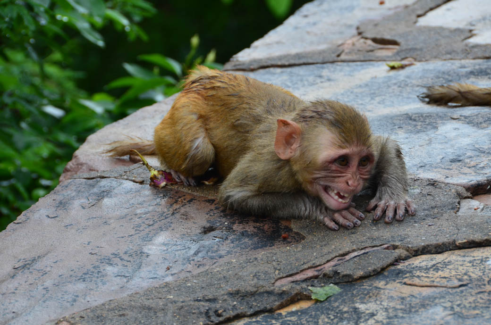

Beware of the monkeys!
Hundreds of rare wild monkeys — some carrying herpes — are on the loose in Florida after a tour guide brought the spunky critters to the state long ago.
Wildlife officials said that three pairs of Rhesus monkeys were transported to a park near Ocala in the 1930s by tour operator Colonel Tooey after a “Tarzan” flick sparked a fascination with the creature.
But the breed has since boomed and more than 1,000 of the monkeys now live in the state, wildlife officials say.
State officials have caught more than 700 of the monkeys in the past decade — most of which tested positive for the herpes-B virus.
Wildlife officials now consider the monkeys a public health hazard.
Current Silver River tour operator Captain Tom O’Lenick, 65, defended transporting the animals, claiming people love them.
“Everybody who comes on the river for a tour wants to see the monkeys,” O’Lenick said.
“From my point of view, as a naturalist, I think the planet changes naturally and species do move around, whether that is by man or other means,” he said.
The monkeys were first marooned on a small island near the Silver River. But the creatures learned to swim.
They have since been spotted hundreds of miles away, near Jacksonville, officials said.
“Just like any other wild animal you need to give them space,” said British wildlife photographer Graham McGeorge, 42.
The monkeys eat dirt and spiders and live near rivers.